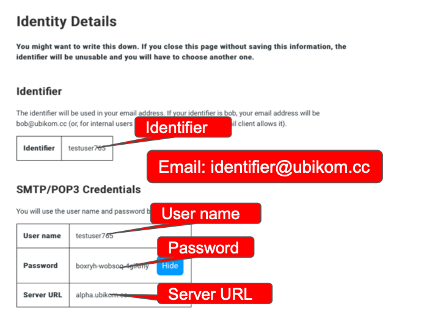

Generic Client Setup
This page contains instructions on how to set up Ubikom Mail on a generic
client, i.e. any mail client that supports SMTP and IMAP protocols. Most clients do.
Check Your Identity Details
This is the information presented on your identity details page:

You need to notice a few things here:
- The identifier. Your email address will be your identifier plus "@ubikom.cc".
I.e. if your identifier is "bob", your email address will be "bob@ubikom.cc".
-
User name, same as your identifier. You will need it to set up connection
to email servers.
-
Password. It will be required (together with user name) to set up
connection to email servers.
-
Server URL. This is the URL you will use for SMTP and IMAP servers.
Create New IMAP Account
Most email clients support IMAP protocol. When you create a new account,
choose IMAP (sometimes you would have to choose "other", or "mail client", etc.)
Specify Account Details
You will have to fill in the account details. Most likely they will come in a few
groups, general account information, incoming server (IMAP) details, and outgoing
server (SMTP) details. Lets go over them.
General Account Information
Here, you would need to specify a few things:
- Email address - this is your identifier with "@ubikom.cc" added to it.
If your identifier is "bob", your email address is "bob@ubikom.cc".
- Account name - this is just a name for your account. Something like
"Ubikom Mail" would do.
- Password - the client may use this password for IMAP (and possibly SMTP) login.
- Account type - if you can chose between POP and IMAP, chose IMAP.
Incoming Server Information
Here you specify information for your incoming (IMAP) server:
- Server addres - enter "alpha.ubikom.cc"
- Server port - 993, which is the default.
- User name - this is your user name from the identity details page.
- Password - your password.
- Security - chose SSL/TLS.
- Authentication - choose Plain, or Normal Password.
Outgoing Server Information
This section is for outgoing (SMTP) server:
- Server addres - enter "alpha.ubikom.cc"
- Server port - 465, which is the default.
- User name - this is your user name from the identity details page.
- Password - your password.
- Security - chose SSL/TLS.
- Authentication - choose Plain, or Normal Password.
- If you have a checkbox saying something like
"server requires authentication", make sure it's checked